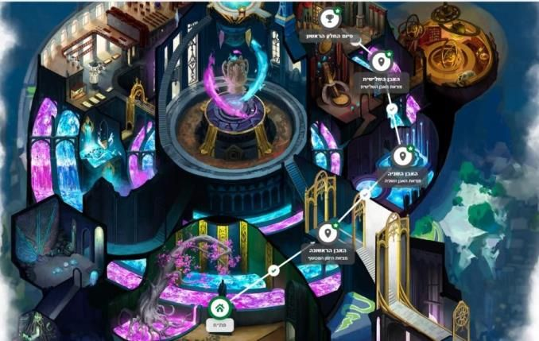
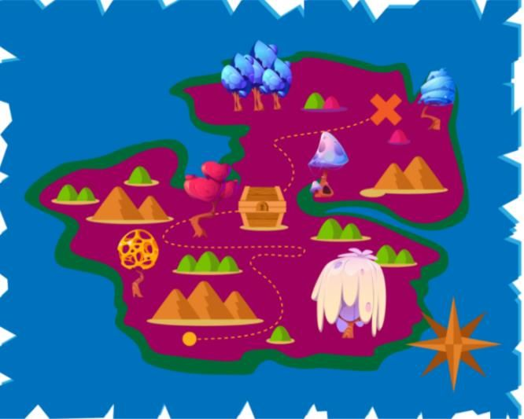
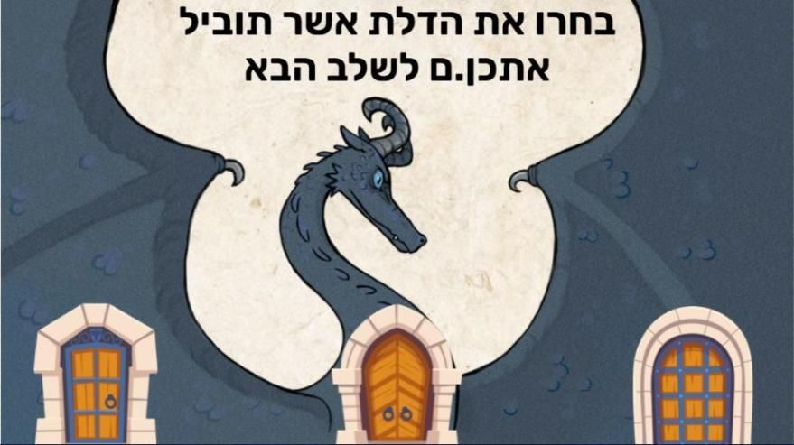

In March 2020 the blackboard became a screen and school became Zoom. Israel’s Ministry of Education flooded teachers with tools, guides and training sessions — volume over quality. A year later the State Comptroller put numbers on it: a fifth to a quarter of teachers felt only “moderately or less” equipped to teach remotely, and about a third said the professional development they’d received barely helped.
We were four M.A. students in Learning Technologies who came to this from four directions: two serving teachers who had watched colleagues keep teaching exactly as before even after the classroom moved to a screen; a former teacher who left the system because he never got the tools; and a learning designer who saw the same struggles among corporate trainers and lecturers. Our question wasn’t “which tool are teachers missing?” but why training doesn’t stick — and what would happen if training felt like the thing it teaches.
The phenomenon
Gamification is the use of game elements and game thinking in a non-game context — a classroom, say. Most of what passes for gamification in schools is a layer of points, badges and leaderboards. Scott Nicholson (2014) separates that reward-based gamification from meaningful gamification, which builds intrinsic motivation rather than depending on prizes. He proposes six principles:
- PLAYA free space to explore, experiment and fail.
- EXPOSITIONA story that puts the learner at the centre.
- CHOICEControl over path, order and way of working.
- INFORMATIONThe why and the how, not just the score.
- ENGAGEMENTBelonging, and challenge that grows with skill.
- REFLECTIONConnecting the experience back to life.
The literature kept pointing at the same barrier: teachers see value in gamification in principle, but fear the technology, the preparation effort and losing control of the room — and people who have never played are asked to teach through play to students who play every day.
The idea
Instead of lecturing about gamification, we built a course made of it. The course lived inside Classcraft, a digital role-playing game for classroom management: each teacher picks an avatar, a first power and a team crest, then steps into a framing story. Each of the six principles is a level, and each level earns a “gamification stone”; collect all six to finish. Play is a jigsaw, Exposition is a map hunt, Choice is a pick between three doors, and so on — and only after a teacher had experienced a principle did she get the theory behind it and a task to try in her own class.



The sequence went from light to deep: an opening meeting comparing an educational game with a commercial one, two meetings inside the environment, a meeting spent building a real gamified lesson, and an open day where each teacher presented what she had taught.
The field
The original plan — two schools — shrank to one when the first school pulled out. Maor recruited six 9th-grade homeroom teachers at a middle school in Kiryat Motzkin, fully voluntary, with no PD credit. Median age 51, median 17 years in the classroom. Five meetings, October 2021 to February 2022, in the middle of the Omicron wave.
The first meeting opened with laughter; the second stalled on platform sign-up, with the older teachers needing one-on-one help; in the third the difficulty climbed and the principles got more abstract. After three meetings we stopped and changed course: the lesson unit would be built together rather than as homework, and the gaps between meetings shrank to a week or two so the lesson would actually happen. Five of six taught it.
“I’ve never finished a computer game in my life — what fun!”
A participant, after the third meeting
What we found
- 01Prior experience set the pace, not the outcome. Teachers with a gaming background led and helped others; those without struggled more — and all of them finished feeling successful.
- 02The big value: principles without a computer. Four of six described success and enthusiasm. What everyone repeated is that narrative, choice or collaboration work with no technology at all — “you didn’t force the computer on us.”
- 03Views shifted — partly. Two already gamified their teaching, two changed their minds, and two with 25+ years said candidly they wouldn’t adopt it.
- 04Students enjoyed it more — as teachers reported. And by the end, teachers were using more gamification principles than digital tools, regardless of experience.
What it means
Six teachers are not a sample. This is a small qualitative study with a researcher close to the participants, and we say so plainly. But the direction was clear: training that teachers live through as learners travels further than training explained to them. And the finding that surprised us most — that teachers walked away with the principles, not the platform — turned out to matter more than we knew. But that’s the next chapter.